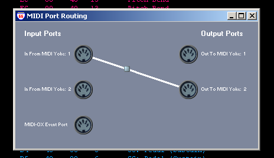
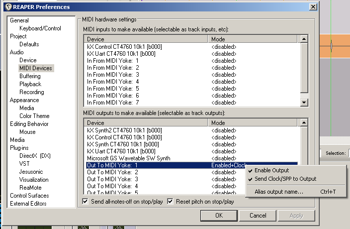
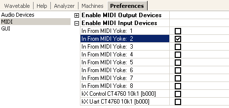
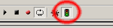

This describes syncing stop/stop in Buzé with an external application over MIDI, using the virtual MIDI Yoke drivers in MIDI-OX as a virtual MIDI cable between the applications.
Get and install MIDI-OX.
Set up MIDI routings in MIDI-OX. A simple setup may look like this:
Start your host, e.g Reaper and go to MIDI preferences. Select the virtual MIDI-OX output port the host should send midi to, and make sure sending of SPP is enabled.
Start Buzé, make sure the MIDI-OX input port is enabled for input:
Finally, enable MIDI sync in Buzé by checking the stop-sign icon in the toolbar:
Now, when you press "Play" in your host, Buzé should start playing too.